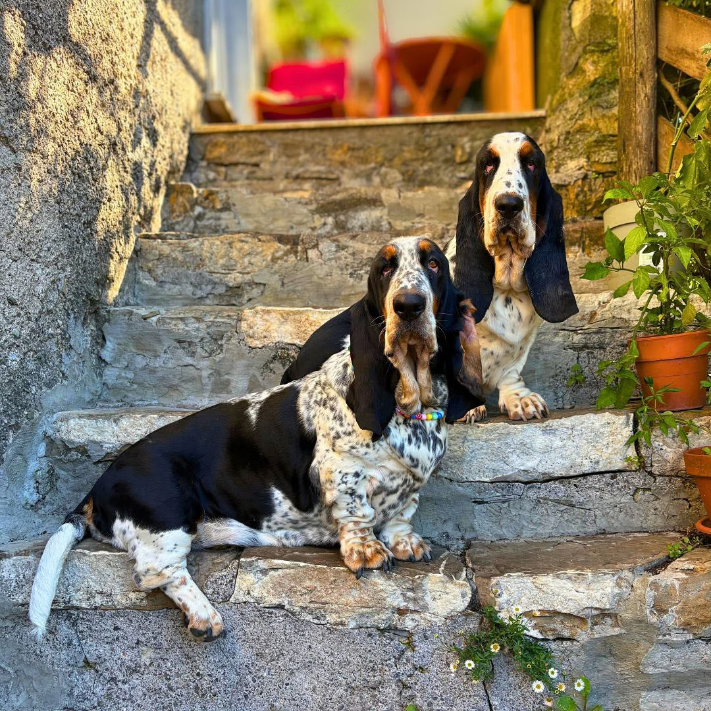

A thoughtful beginning for every Basset Hound.
Our Basset Hounds are raised in a calm, family-oriented environment where they receive daily attention, affection, socialization, and individual care in Houston, Texas.
Raised with care, prepared for family life.
We believe the environment a puppy grows up in plays an important role in shaping confidence, temperament, and the ability to become a wonderful family companion.
Our love for Basset Hounds began with a genuine appreciation for their unique personality, gentle nature, loyalty, and unmistakable charm. What started as a simple love for the breed naturally grew into a deeper passion for responsible breeding and raising exceptional companions.
At Oakwood Basset, we are committed to thoughtful breeding practices with a strong focus on health, temperament, structure, and overall quality. We carefully consider each pairing and strive to produce puppies that represent the beautiful qualities of the Basset Hound breed while remaining healthy, happy, and well-adjusted.
Our journey has continued to grow through years of dedication, learning, and an appreciation for every dog that has become part of our family. Each puppy receives proper veterinary care, early socialization, and plenty of human interaction to help prepare them for life in a new home.
Today, we are proud to share our love for the Basset Hound with families looking for a loyal and affectionate companion. Every puppy raised at Oakwood Basset is treated with love and care, and we take great pride in helping each one find a wonderful forever home.
Our commitment is simple: raise healthy, happy Basset Hounds and give every puppy the best possible beginning in life.


The best possible beginning.
Families receive clear communication, complete health records, and continued support beyond the day a puppy joins its new home.
- Early socialization with people, sounds, surfaces, and gentle routines
- Veterinary exams, vaccinations, deworming, and written records
- A written contract and a commitment to support throughout the dog’s life